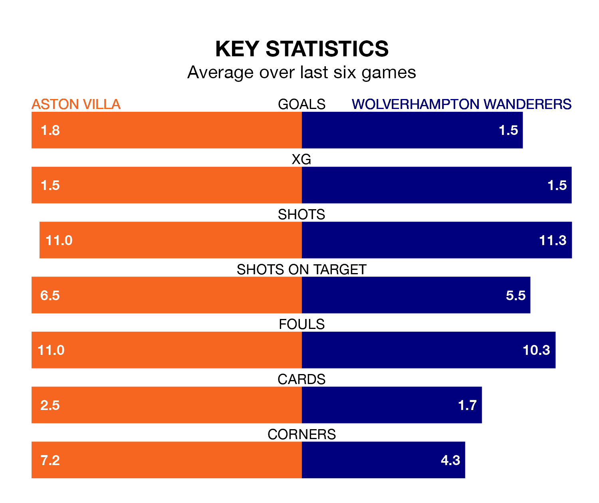

Aston Villa are heavy favourites to keep all three points at home in Saturday's late kick-off against Wolverhampton Wanderers.
The Villa, who sit fourth in the Premier League with 29 games played, are priced at 1.6 to seal victory at Villa Park.
Sitting five places and 15 points behind them in the table, Wolves are 4.5 to win with *Betting Company*, while the draw is at 4.2.
With 60 goals in 29 games so far this season, Villa are scoring more than average in the league with 2.1 goals per game. And they are conceding fewer than average, letting in 42 goals at a rate of 1.4 per game.
Wolves, meanwhile, are below average scorers, with 1.5 goals per game, compared to a league average of 1.6. They have conceded 1.6 goals per game.
In Ollie Watkins, the Villa have one of the league's most on-form strikers so far this season. He has notched 16 goals in 29 appearances, to sit second in the scoring charts.
His goal rate of one every 161 minutes is slightly quicker than that of Hee-Chan Hwang, the away side's top scorer with a goal every 162 minutes, and a total of 10 goals in 22 games.
In the last 10 years, Villa and Wolves have played each other on 14 occasions. Villa won three of them, Wolves seven, and they drew four times.
On average, the Villa scored 1.0 goal and Wolves 1.2 in those matches.
Their last meeting was on October 8, when they played out a 1-1 draw.
The hosts are in mixed form in the Premier League, with three wins and a draw from their last six games.
With four wins and two losses over that period, Wolves's form is slightly better – they have taken 12 points from 18, compared to Villa's 10.
Villa's last match was on March 17, a 1-1 draw against West Ham United, with Nicolò Zaniolo getting the goal for the Villa.
Wolves beat Fulham 2-1 last time out, on March 9, with Rayan Aït Nouri on the scoresheet.
Updated: 10:19 (UTC), 22/03/24